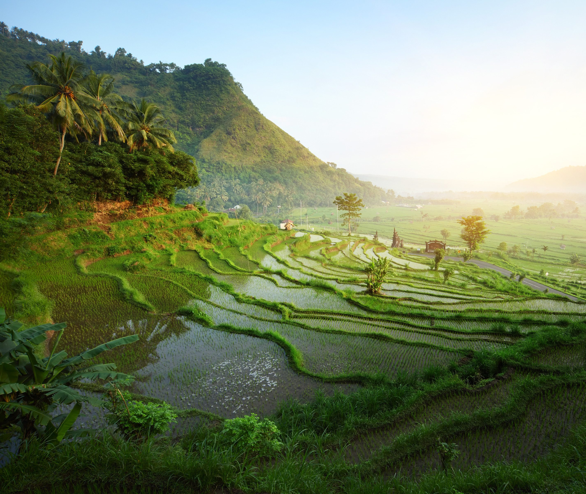

Waarom hier?
Eén land, oneindig veel sfeer: van Bali en Java tot Komodo of de Gili’s — rust, avontuur en warmte in één reis.
Ideeën voor onze trip
Ubud en de rijstvelden, een vulkaanwandeling, of eilandhoppen.

Eén land, oneindig veel sfeer: van Bali en Java tot Komodo of de Gili’s — rust, avontuur en warmte in één reis.
Ubud en de rijstvelden, een vulkaanwandeling, of eilandhoppen.